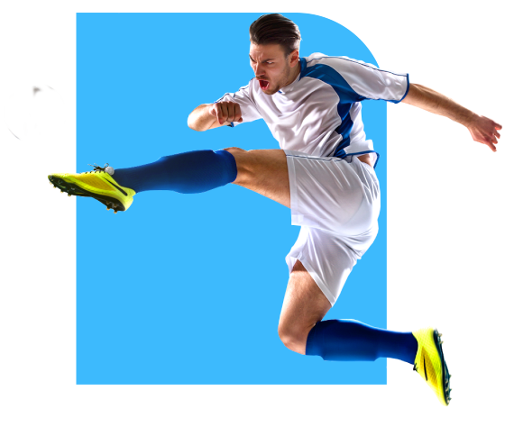
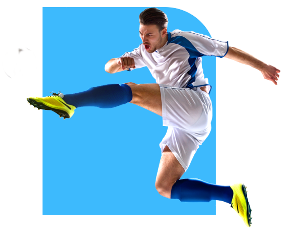

Football is the most popular sport in Brazil and a prominent part of its national identity. The Brazil national football team has won the FIFA World Cup tournament five times, the most of any team, in 1958, 1962, 1970, 1994 and 2002. Brazil and Germany are the only teams to succeed in qualifying for all the World Cups for which they entered the qualifiers; Brazil is the only team to participate in every World Cup competition ever held. It is among the favourites to win the trophy every time the competition is scheduled. After Brazil won its third World Cup in 1970, they were awarded the Jules Rimet Trophy permanently. Brazil has also won an Olympic Gold Medal, at the 2016 Summer Olympics held in Rio de Janeiro

Lionel Messi
One of the legends of our time, great footballer, Lionel Messi. He won several cups at Barcelona and recently won Copa America for Argentina.

Christiano Ronaldo
The best ever footballer of all time. His football style is just beyond expression. Just let the ball be in his legs to see his magic

Angel Di Maria
My favorite player since 2014. His dribbling, passing and overall style is amazing. Not only he is a dependable winger, but good at front too. He shot the winning goal for Argentina in Copa America

Paulo Dybala
As a plastic football fan, I dont know anything about him. must be a great player to be in this list

Mesut Ozil
Great German Player. Won 2014 world cup with his team. The great hero who was in the 7-1 match against Brazil

Mauro Icardi
Again, as a plastic football fan, I dont know anything about him. must be a great player to be in this list

Neymar Injured Jr.
One and only vanga vanga broken player who breaks apart with a single touch and falls down from a blow of air

Kylian Mbappé
Great French Player. Crucial part of 2018 world cup winner french team. Scored a goal in the final too

Mohamed Salah
Egyptian Star. He could do better in better circumstances. A really underrated player of the middle east

Harry Kane
Great English Striker. An asset for the inventor of football country. both 2018 fifa cup and 2020 euro was promising for him but no luck

Kevin De Bruyne
for the third time, as a plastic football fan, I dont know anything about him. must be a great player to be in this list

Philippe Coutinho
Can't remember what he did, but the name rings a bell. Must be a great player to be in this list
Argentina has appeared in five World Cup finals, including the first final in 1930, which they lost 4–2 to Uruguay. Argentina won in their next final appearance in 1978, beating the Netherlands 3–1 at extra time. Argentina won again in 1986 with a 3–2 victory over West Germany, and a tournament campaign inspired by their captain Diego Maradona. They made the World Cup finals once more in 1990, and lost 1–0 to West Germany following a controversial penalty call in the 87th minute. Argentina, led by Lionel Messi, made their fifth appearance in a World Cup final in 2014, again losing to Germany 1–0 during extra-time. Argentina's World Cup winning managers are César Luis Menotti in 1978 and Carlos Bilardo in 1986. Argentina has also been very successful in the Copa América, winning it 15 times, most recently in 2021, and are currently tied with Uruguay in most wins. The team also won the 1992 FIFA Confederations Cup and the 1993 Artemio Franchi Trophy. Argentina is known for having rivalries with Brazil, Uruguay, England, and Germany due to particular occurrences with one another throughout football history


France won the 2018 FIFA World Cup, defeating Croatia 4–2 in the final match on 15 July 2018. This was the second time they had won the tournament after winning it on home soil in 1998. France was the first national team to win the three most important men's titles recognized by FIFA: the World Cup, the Confederations Cup, and the Olympic tournament after victory in the Confederations Cup in 2001. The now-defunct Confederations Cup started in 1992. Prior to this, Uruguay and Italy had won both the Olympic tournament and the World Cup in the 1920s and 1930s. England and Germany had also won both tournaments, albeit England competes as Great Britain in the Olympics and East Germany won the Olympic tournament in 1976. Since 2001, Argentina (after the 2004 Olympics) and Brazil (after the 2016 Olympics) are the other two national teams that have won these three titles. They, along with Germany, Italy and Uruguay, have also won their respective continental championship (Copa América for Argentina, Brazil and Uruguay, and UEFA European Championship for France, Germany and Italy)
Germany is one of the most successful national teams in international competitions, having won four World Cups (1954, 1974, 1990, 2014), three European Championships (1972, 1980, 1996), and one Confederations Cup (2017). They have also been runners-up three times in the European Championships, four times in the World Cup, and a further four third-place finishes at World Cups. East Germany won Olympic Gold in 1976. Germany is the only nation to have won both the FIFA World Cup and the FIFA Women's World Cup. At the end of the 2014 World Cup, Germany earned the highest Elo rating of any national football team in history, with a record 2,205 points. Germany is also the only European nation that has won a FIFA World Cup in the Americas.


Spain is the only national team with three consecutive major titles, becoming the first European team to win a FIFA World Cup outside of Europe in 2010 as well as the only one to win back-to-back European Championships in 2008 and 2012. From 2008 to 2013, Spain won the FIFA Team of the Year, the second-most of any nation, behind only Brazil. Also between February 2007 and June 2009, Spain went undefeated for a record-equalling 35 consecutive matches, shared with Brazil. Their achievements have led many experts and commentators to consider the 2008–2012 Spanish squad one of the best ever international sides in world football
Defending champions Portugal are one of the most exciting teams heading into the competition and Fernando Santos's side are expected to be one of the challengers despite a tough draw. Portugal have been dealt a tough hand of cards, with France, Germany and Hungary also part of the group. Portugal has one major asset, Christiano Ronaldo


Italy is one of the most successful national teams in the history of football and the World Cup, having won four titles (1934, 1938, 1982, 2006) and appearing in two other finals (1970, 1994), reaching a third place (1990) and a fourth place (1978). Italy have also won two European Championships (1968, 2020), and appeared in two finals of the tournament (2000, 2012). Italy's highest finish at the FIFA Confederations Cup was in 2013, where the squad achieved a third-place finish.